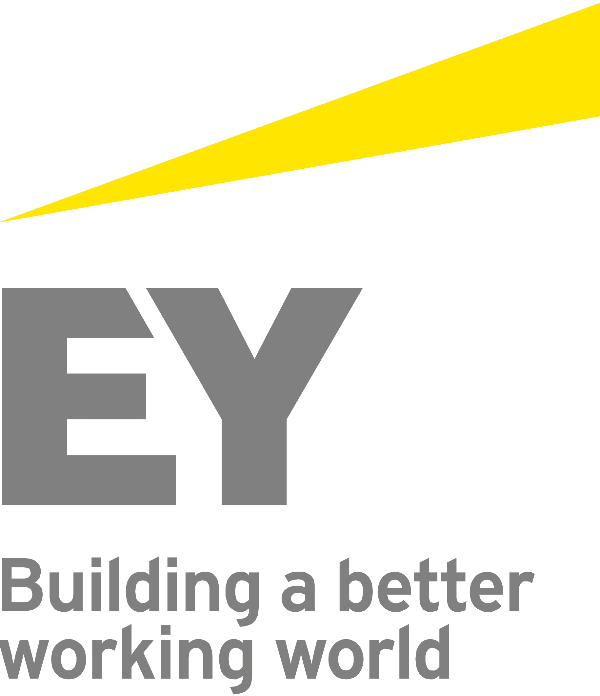

SUMMARY
Computer Science Engineering Graduate and certified Multi-Cloud &
Cybersecurity professional with a proven track record of executing
IT risk assessments and technical audits within Big 4 environments
(PwC, EY). Adept at combining secure software development
practices with cloud infrastructure design and data analytics. A
proactive problem-solver with international academic exposure,
ready to deliver immediate value in enterprise technology, cloud
security, or software engineering roles.
EXPERIENCE
Financial Audit Information Technology Intern
Ernst and Young (EY) 12/2023 - 09/2024 Abidjan, Côte D'Ivoire
- Assessed IT General Controls (ITGCs), including access management, change management, and backup procedures.
- Reviewed and tested IT Application Controls (ITACs) to ensure integrity and accuracy of financial systems.
- Participated in data migration audits, validating data completeness and consistency across systems.
- Prepared audit documentation, control matrices, and test plans while collaborating with client stakeholders.
- Utilized Alteryx and EY audit tools to support data analytics and automate control testing activities.
Cybersecurity, Privacy & Data Protection Intern
PricewaterhouseCoopers (PwC) 06/2022 - 09/2022 Douala, Cameroon
- Conducted risk assessments and gap analyses aligned with ISO 27001 requirements.
- Analyzed security logs and vulnerability data to identify potential threats and weaknesses.
- Supported cybersecurity audits and assessed data suppliers' security compliance.
- Prepared security documentation and recommended controls to improve organizational security posture.
- Assisted in identifying potential data exfiltration risks and mitigation strategies.
Blockchain Development Intern
Cialfor 03/2021 - 06/2021 Pune, India- Contributed to blockchain and Web3 development projects in a remote startup environment.
- Applied secure smart contract development principles and blockchain security practices.
- Worked with cryptographic concepts including digital signatures, encryption, and key management.
- Participated in testing, auditing, and performance optimization of blockchain applications.
Intern Developer
Megasoft 07/2019 - 11/2019 Yaoundé, Cameroon- Developed and maintained MySQL databases, including schema creation, updates, and migrations.
- Performed functional and security testing to identify and report application vulnerabilities.
- Implemented database security controls and access management practices.
- Applied secure coding principles and data privacy best practices in software development.
LANGUAGES
English
Native
French
Native
Hindi
Elementary
PROJECTS
Quick Commerce Delivery Platform:
A mobile application for on-demand quick commerce and delivery
services, enabling users to browse products, place orders, and
track deliveries in real time. Implemented user authentication,
product catalog management, cart and checkout functionalities,
order tracking, and secure payment integration to provide a
seamless and efficient shopping experience.
Factory Management Software:
A comprehensive factory management system comprising three core
modules - Attendance Management, Cleaning Task Management, and
Payment Management. Implemented employee attendance tracking with
presence, absence, and lateness monitoring, task assignment and
progress tracking for cleaning operations, and payment processing
functionalities to streamline workforce management and operational
efficiency.
Secure File Management System:
Django-based web application comprising two main modules - Key
Management System and File Management System. Implemented user
authentication and profile management functionalities to ensure
secure access control.
TECHNICAL SKILLS
Django
React Native
TypeScript
Python
C
SQL
Google Cloud
OCI
AWS
ISO 27001
Risk Assessment
SIEM/SOAR
IAM
Gap Analysis
Data Exfiltration Analysis
Docker
CI/CD
Security Automation
ITGCs
ITACs
Audit Documentation
PowerBI
Alteryx
NumPy
Google Suite
Ms Office
SOFT SKILLS
Leadership
Proactivity
Project Management
Time Management
Punctuality
Out of Box Thinking
Accountability
EDUCATION
Computer Science Engineering, Bachelor of Technology
Suresh Gyan Vihar University 2018 - 2023 Jaipur, IndiaTRAINING / COURSES
Google Cloud:
Cloud Engineer - Associate
Juniper Networks:
JNCIA Cloud Associate
Oracle Cloud:
Oracle Cloud Infrastructure - Architect Associate
Palo Alto:
Palo Alto Networks Certified Cybersecurity Entry-level
Technician
INTERESTS
Basketball | 8+ Years
Cultivated leadership, teamwork, and discipline through
competitive basketball.
Reading | 4+ Years
Developed analytical thinking, intellectual curiosity, and
continuous learning habits through regular reading.
Cycling & Running | 2+ Years
Developed endurance, discipline, and consistency through
long-distance cycling and community-based training
activities.